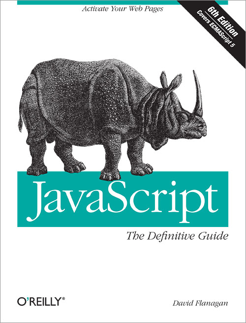
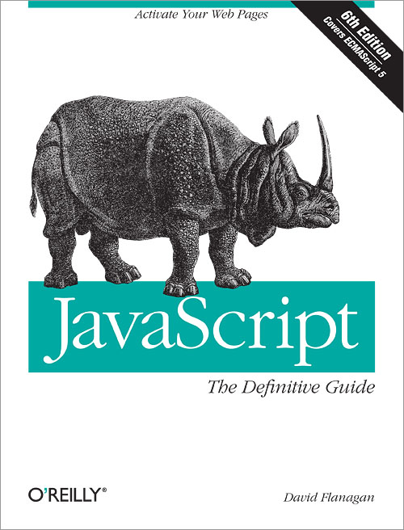

Mrzim / Volim JavaScript
Love/hate odnos izmedju developera i JavaScript-a
Prezentacija za HTML5/JavaScript
korisnicku grupu, Banja Luka
Autor Miroslav Popovic / @miroslavpopovic
Sta je tema danasnje emisije?
-
Zasto mrzimo JavaScript?
- Razlicitost implementacija u browserima
- DOM
- "Pogresno koristenje"
- Nedostatak pravih alata za razvoj i debugging
-
Zasto volimo JavaScript?
- Jednostavnost
- Mogucnosti
- Sveprisutnost
- Patterns
- Community i ekosistem
- ...
Istorija

- Brendan Eich, Netscape, 1995.
- LiveScript
- Internet Explorer 3 - JScript, 1996.
- ECMA Standardization - ECMAScript, 1996.
Java and JavaScript are similar like Car and Carpet are similar.
Standardizacija
- ECMA Standardization - ECMAScript, 1996
- ECMAScript 1, juni 1997.
- ECMAScript 2, juni 1998.
- ECMAScript 3, decembar 1999.
- ECMAScript 4, napusten
- ECMAScript 5, decembar 2009.
- ECMAScript 6 - Harmony, u razvoju
Browser Wars I & II
AJAX i JavaScript revolucija
- XMLHTTP, Microsoft Outlook Web Access team, 1998.
- IE 5 dobija XMLHTTP ActiveX kontrolu, 1999.
- Mozilla, Safari, Opera, IE 7... - XMLHttpRequest JavaScript object
- Gmail, 2004.
- Ajax termin - Jesse James Garrett, 2005.
- i rezultat toga je...
Boooooom!!!
Sadasnjost
- Libraries & Frameworks
- prototype, jQuery...
- Backbone, Knockout, Ember, Angular...
- CommonJS
- Interpreteri (CoffeScript, Dart, TypeScript)
- Serverski JavaScript (node.js)
- Ne samo unutar browser-a
- Novi / stari alati
- ...
Losa reputacija
Browseri i DOM
// DOM Level 0 (< IE5.5)
var form = document.forms['formId'];
// DOM Level 1+
var form = document.getElementById('formId');
// DOM - Web standard (IE9+ i svi ostali)
var text = element.textContent;
// IE, WebKit (Safari, Chrome), Opera
var text = element.innerText;
// Prije DOM Level 2
element.onclick = function() { ... }
// < IE9
element.attachEvent('onclick', function() { ... });
// DOM Level 2
element.addEventListener('click', function() { ... });
Rjesenja - Browser sniffing
if (navigator.userAgent.indexOf('MSIE') != -1) {
// IE kod ovdje...
} else {
// Non-IE kod ovdje...
}
<!--[if IE 6]>
<html lass="ie6">
<![endif]-->
<!--[if !IE]>
<html lass="non-ie">
<![endif]-->
Rjesenja - Feature detection
var modifyText = function() { ... };
if (element.addEventListener) {
element.addEventListener('click', modifyText);
} else {
element.attachEvent('onclick', modifyText);
}
Rjesenja - Third party
jQuery
var form = $('#formId');
var text = $(element).text();
$(element).click(function () { ... });
$(element).on('click', function () { ... });
Modernizr
Modernizr.load({
test: Modernizr.geolocation,
yep : 'geo.js',
nope: 'geo-polyfill.js'
});
if (Modernizr.touch) {
// ...
} else {
// ...
}
Alati
Omiljeni debug tool
alert('Ne radi ti ovo...');Alati danas

Losa reputacija - jezik
Globalni namespace
window objekat, global objekat
var glob = 'globalna varijabla';
function localScope() {
var local = 'lokalna varijabla';
glob2 = 'globalna varijabla - nema var';
}
window.alert = function(message) {
console.log(message);
}
alert('ovaj tekst ce biti ispisan u konzoli');
Opseg varijabli
ne postoji block scope
if (condition) {
var local = 'da li je ovo lokalna varijabla?';
}
console.log(local);
var local;
if (condition) {
local = 'da li je ovo lokalna varijabla?';
}
console.log(local);
Automatsko dovrsavanje naredbi
Automatic semicolon insertion
return
{
status: true
};
return; // undefined
{
status: true
};
// Ispravno koristenje
return {
status: true
};
Rezervisane rijeci
abstract boolean break byte case catch char class const continue
debugger default delete do double else enum export extends false
final finally float for function goto if implements import in
instanceof int interface long native new null package private
protected public return short static super switch synchronized this
throw throws transient true try typeof var volatile void while with
var method; // OK
var class; // greska
object = {box: value}; // OK
object = {case: value}; // greska
object = {'case': value}; // OK
object.box = value; // OK
object.case = value; // greska
object['case'] = value; // OK
typeof nepravilnosti
typeof 55.4 // 'number' - OK
var vrijednost = null;
typeof vrijednost // 'object' !!
// bolje rjesenje za null provjeru
vrijednost === null
// provjera da li varijabla sadrzi objekat
if (vrijednost && typeof vrijednost === 'object') {
// vrijednost je objekat ili niz (array)
}
// regularni izrazi
typeof /a/ // 'object' ili 'function', zavisno od browsera
+ operator
var prvi = 100;
var drugi = '50';
prvi + drugi // '10050' - konverzija u string
parseInt
parseInt('20') // 20
parseInt('20 kg') // 20
parseInt('8') // 8
parseInt('08') // 0 !! - oktalni broj
parseInt('08', 10) // 8 - radix parametar
Brojevi sa pokretnim zarezom
0.1 + 0.2 === 0.3 // false, 0.1 + 0.2 = 0.30000000000000004
10 + 20 === 30 // true
NaN
typeof NaN === 'number' // true
34 + NaN // NaN
NaN === NaN // false
NaN !== NaN // true
isNaN(NaN) // true
isNaN(0) // false
isNaN('greska') // true
isNaN('0') // false
Truthy - Falsy
0 // Number
NaN // Number
'' // String
false // Boolean
null // Object
undefined // Undefined
var value = myObject[name];
if (value == null) {
console.log(name + ' not found.');
}
var value = myObject[name];
if (typeof value === 'undefined') {
console.log(name + ' not found.');
}
Dodatni zarez u nizovima
var x = [1,2,3,]; //ERROR
var y = {'a': 1, 'b': 2, 'c': 3,}; //ERROR
Operatori jednakosti == i ===
'' == '0' // false
0 == '' // true
0 == '0' // true
false == 'false' // false
false == '0' // true
false == undefined // false
false == null // false
null == undefined // true
Preporuka: Uvijek koristiti === i !==
Ostale problematicne naredbe
with (obj) {
a = b;
}
eval('a = a + 1');
setTimeout('...JS kod...', 1000);
setInterval('...JS kod...', 1000);
// ...
Skrivena ljepota
Literali za objekte i nizove
var myObject = {
'prop1': 'value 1',
'prop2': 2,
'prop3': true,
'prop4': function() {}
};
var myObject = {
prop1: 'value 1',
prop2: 2,
'class': 'info',
prop4: function() {},
complex: {
prop1: true,
prop2: [ 1, 2, 10 ]
}
};
var arr = [ 1, 15, 54, 3, function() {}, 'test', { prop1: true} ];
// JSON - JavaScript object notation
{
isLoaded: true,
message: 'ovo je JSON',
items: [
{ id: 1, name: 'item 1' },
{ id: 2, name: 'item 2' },
{ id: 3, name: 'item 3' }
]
}
Funkcije su pravi objekti
Ne samo sintaksa... vrijednost
// Mogu biti smjestene u varijablu, niz ili neki drugi objekat
var myFunc = function() { };
var myFuncs = [ function() { /*...*/ }, function() { /*...*/ } ];
var myObject = { val1: true, val2: 10, func1: function() { /*...*/ }};
// Mogu biti argument neke druge funkcije
var max = function(val1, val2) { return val1 > val2 ? val1 : val2; },
min = function(val1, val2) { return val1 < val2 ? val1 : val2; };
var find = function(items, compare) {
var result = items[0];
for (var i = 1; i < items.length; i++) {
result = compare(result, items[i]);
}
return result;
};
var numbers = [5, 19, 44, 56, 2, 4];
var maxNumber = find(numbers, max); // 56
var minNumber = find(numbers, min); // 2Funkcije su pravi objekti
// Mogu biti povratna vrijednost neke druge funkcije
var logFactory = function(type) {
var
consoleLog = function(message) {
console.log(message);
},
alertLog = function(message) {
alert(message);
};
return type == 'alert' ? alertLog : consoleLog;
};
var log = logFactory('console');
log('Ovo ce biti ispisano u konzoli');
// Imaju sopstvene properties, posto su pravi objekti
var myFunc = function() { /*...*/ };
myFunc.prop1 = 10;
myFunc.prop2 = true;
myFunc();Prototipi
- prototype - dodatni property na svakom objektu
- Pointer na drugi objekat
- Ukoliko objekat ne sadrzi trazeni property, JavaScript trazi property u prototype-u
// Prototypal inheritance
var Animal = function() {
this.name = '-no name-';
};
Animal.prototype = {
introduce: function() {
console.log('Hi, I am ' + this.Name);
}
}
var Cat = function() { /* ... */ };
Cat.prototype = new Animal();
var myCat = new Cat();
myCat.name = 'Kitty';
myCat.introduce();Closures i function opseg
var logFactory = function(type) {
var logCount = 0,
consoleLog = function(message) {
logCount++;
console.log('LOG ' + logCount + ': ' + message);
},
alertLog = function(message) {
logCount++;
alert('LOG ' + logCount + ': ' + message);
};
return type == 'alert' ? alertLog : consoleLog;
};
var log = logFactory('console');
log('Ovo ce biti ispisano u konzoli sa rednim brojem');Regularni izrazi
var numberRegex = /^-?\d+(?:\.\d*)?$/i;
var isNumber = function(num) {
return numberRegex.test(num);
};
isNumber('10'); // true
isNumber('number'); // false
isNumber('-5.3'); // true
isNumber('12.34.55.11'); // falsePatterns
- Konstruktori - Constructor functions
- Simuliranje OOP-a
- Enkapsulacija - public / private
-
Naslijedjivanje - Inheritance
- Prototypal
- Extensions
- Multi-inheritance
- ...
- Dogadjaji - events, messaging
- Asinhroni metodi - deferred
- Klasicni GoF patterni
- Moduli, Revealing module
- MV* - MVC, MVVM...
- ...
Frameworks and libraries
- jQuery
- Backbone
- Underscore
- Angular
- Knockout
- Ember
- Require.js - AMD
- CommonJS
- ...
Buducnost
- CommonJS - Standard JavaScript Library
-
ECMAScript 6 - Harmony
- Blok opseg - let i const - umjesto var
- Podrazumjevane vrijednosti parametara
function f(x, y = 1, z = 0) {...} - Klase! - class, extends, prototype, super
- Moduli
- itd...
- http://espadrine.github.com/New-In-A-Spec/es6/
Buducnost - ECMAScript 6 klase
class Point extends Base {
constructor(x,y) {
super();
this[px] = x, this[py] = y;
this.r = function() { return Math.sqrt(x*x + y*y); }
}
get x() { return this[px]; }
get y() { return this[py]; }
proto_r() {
return Math.sqrt(this[px] * this[px] + this[py] * this[py]);
}
equals(p) {
return this[px] === p[px] && this[py] === p[py];
}
}Buducnost - ECMAScript 6 moduli
module math {
export function sum(x, y) {
return x + y;
}
export var pi = 3.141593;
}
import {sum, pi} from math;
alert(sum(pi,pi));Zakljucak
- JavaScript je buducnost, spremite se
- Koristite JavaScript kao JavaScript
- Naucite da izbjegavate lose dijelove
- Pratite standarde
- Modernizujte svoj toolset
- ... i zavoljecete ovaj elegantni jezik
Literatura
 
